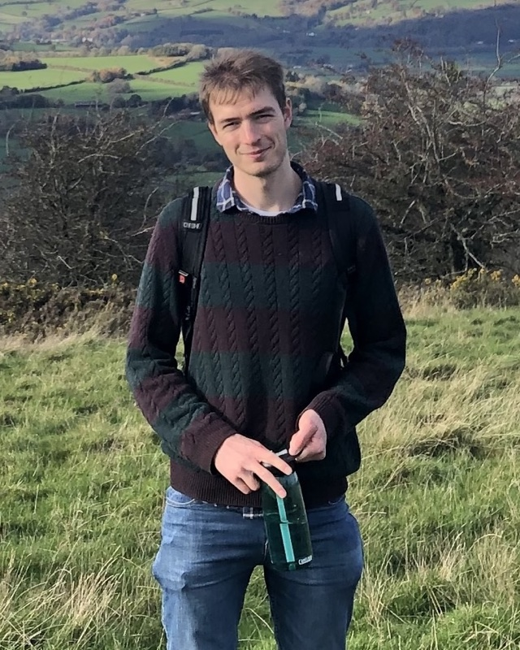

People
The lab
A young, growing group based in the School of Life Sciences at Anglia Ruskin University, with close ties to Cambridge, Edinburgh and the Wellcome Sanger Institute.

Principal Investigator
Dr Max Carter-Brown
Senior Lecturer in Plant Ecology & Genetics · publishes as Max R Brown
Max is a plant evolutionary biologist who moves comfortably between the field, the greenhouse and the command line.
He read Biological Sciences at the University of Oxford, then completed a PhD at the University of Edinburgh with Alex Twyford on hybridisation and parasitism in eyebrights. As a Senior Bioinformatician in Mark Blaxter's group at the Wellcome Sanger Institute's Tree of Life programme he wrote widely used genomics software, including tidk and the GoaT command-line interface, before a spell as a Data Scientist at the Bank of England.
He joined Anglia Ruskin University in 2023, where he led the launch of the new BSc Biology degree as Course Director, and was promoted to Senior Lecturer in 2026. He teaches ecology, genetics, bioinformatics and statistics, and has appeared on BBC Radio and TV Cambridgeshire talking about apples, genomes and the Darwin Tree of Life.
Career
Path so far
- 2026–Senior LecturerAnglia Ruskin University, CambridgeLecturer from 2023; Course Director for the new BSc Biology (2023–2026).
- 2023–Research AssociateRoyal Botanic Garden EdinburghDarwin Tree of Life plant sampling working group.
- 2022–Visiting ResearcherTree of Life, Wellcome Sanger InstituteMaintainer of GoaT CLI and fasta_windows; GoaT advisory board.
- 2022–23Data ScientistBank of England, LondonSoftware pipelines for regulatory data; programming training.
- 2020–22Senior BioinformaticianTree of Life, Wellcome Sanger InstituteBlaxter Group — organelle assembly, apple and oak genomes.
- 2016–20PhD, Plant Ecology & GeneticsUniversity of EdinburghWith Alex Twyford — taxonomic complexity in eyebrights and the British flora.
- 2013–16BA Biological SciencesUniversity of OxfordDung beetle community ecology in Sumatran oil palm plantations.
Service & recognition
Beyond the lab
- SORTEE Member Engagement Committee2026–
- External Examiner, MRes — Bangor University2026
- PgCert Higher Education Practice2024
- Advisory board, Genomes on a Tree (GoaT)2022–
- Council member, Botanical Society of Britain & Ireland2019
Teaching
Ecology, genetics, bioinformatics and statistics across Biological, Biomedical and Forensic Sciences at ARU. Previously taught field ecology, genomics and plant ecology at Edinburgh, and designed programming courses (R, Python, Flask, NLP) for analysts at the Bank of England.
Team
Students & researchers
Somatic mutation variation in plants
Funded by a Cambridge Philosophical Society Sedgwick studentship and co-supervised with Alex Cagan (University of Cambridge) and the Wellcome Sanger Institute.
Dissertation projects
Recent projects span plant mitochondrial genome analysis, the comparative genomics of hybridisation and transposable element evolution.
Join us →
We are always keen to hear from motivated students and fellowship applicants.
Collaborators